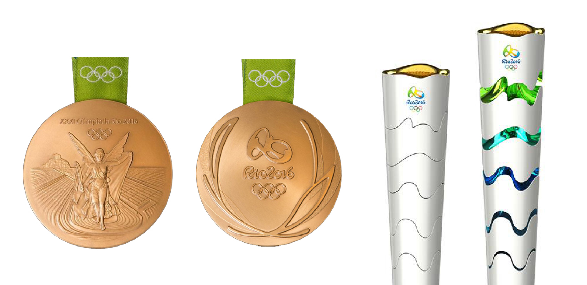
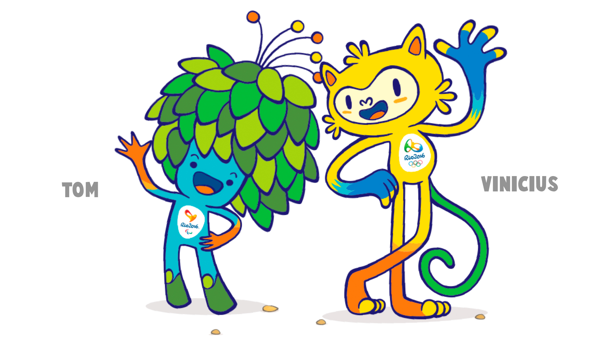

Los Juegos de Río 2016 ofrecieron el mejor entorno posible para alcanzar el mejor rendimiento.
Los atletas disfrutaron de unas instalaciones de primer nivel, incluida una magnífica villa,
todo ubicado en una de las ciudades más bellas del mundo, en una estructura compacta para una máxima comodidad.
ESTRUCTURA COMPACTA
Las sedes de competición estuvieron ubicadas en cuatro zonas (Barra, Copacabana, Deodoro y Maracaná)
y estuvieron conectadas por un anillo de transporte de gran rendimiento. Casi la mitad de los atletas
pudieron llegar a sus sedes en menos de 10 minutos y casi el 75% pudo hacerlo en menos de 25 minutos.
DATOS DE LAS SEDES
De las 34 sedes de competición, ocho pasaron por trabajos permanentes, siete fueron completamente temporales
y nueve se construyeron como sedes permanentes de legado.
TODAS LAS MIRADAS EN RÍO
Los Juegos de Río también celebraron y mostraron el deporte, gracias al impresionante entorno de la ciudad
y al deseo de elevar la presentación de este gran evento a nuevas cotas. Al mismo tiempo, Río 2016 fue una
oportunidad para cumplir las aspiraciones más amplias para el futuro a largo plazo de la ciudad, la región
y el país, una oportunidad para acelerar la transformación de Río de Janeiro en una ciudad global aún mayor.
DISEÑO DE MEDALLA Y ANTORCHA

¡MASCOTAS!

En la Siguiente página encontraras información de los Atletas que participaron en los Juegos Olimpicos Rio de Janeiro 2016